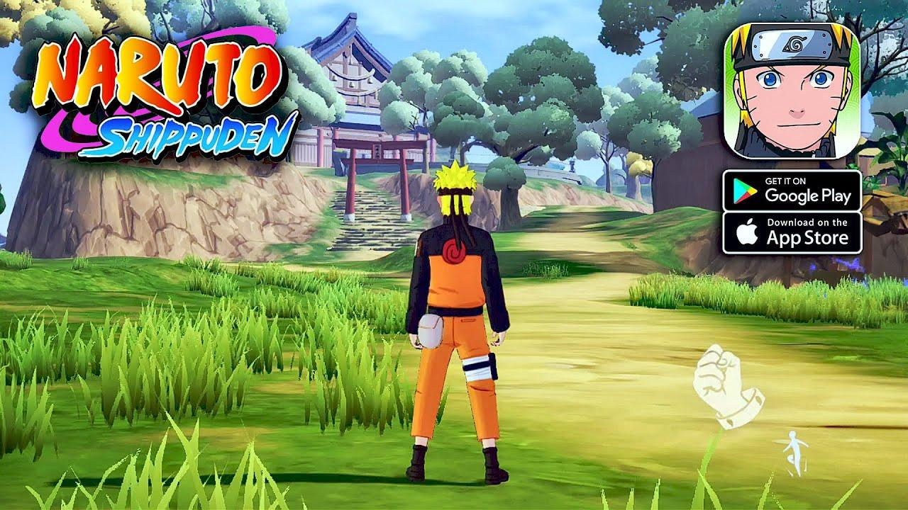

Petualangan Epik di Dunia Ninja: Menyelami Game Naruto Shippuden Secara Mendalam

Naruto Shippuden bukan cuma mendominasi dunia anime dan manga, tapi juga sukses besar di ranah video game. Franchise ini nyatanya berhasil menyuguhkan pengalaman bermain yang solid dengan balutan cerita kuat, karakter ikonik, dan gameplay yang bikin nagih. Lewat artikel ini, kita bakal menyelami dunia game Naruto Shippuden lebih dalam, mulai dari sejarah perkembangan, mekanisme permainan, fitur unggulan, hingga dampaknya di industri game modern.
Sejarah dan Perkembangan Game Naruto Shippuden
Dari Manga ke Layar Game
Naruto, karakter yang diciptakan oleh Masashi Kishimoto, pertama kali muncul di manga pada tahun 1999. Popularitasnya yang meroket membuka jalan ke berbagai media lain, termasuk dunia game. Adaptasi game mulai bermunculan sejak awal 2000-an, mengikuti alur cerita dari seri Naruto klasik yang kemudian berlanjut ke Naruto Shippuden.
Seri Ultimate Ninja Storm: Tonggak Sejarah
Salah satu seri game Naruto Shippuden paling terkenal adalah Naruto Shippuden: Ultimate Ninja Storm. Game ini dikembangkan oleh CyberConnect2 dan dirilis oleh Bandai Namco Entertainment. Debutnya dimulai pada tahun 2008 dengan judul Naruto: Ultimate Ninja Storm. Seiring waktu, seri ini terus berkembang, menghadirkan peningkatan dari segi grafis, gameplay, dan fitur lainnya.
Dari kisah awal Naruto hingga puncak Perang Dunia Ninja Keempat, seri ini menghidupkan cerita lewat visual cel-shaded dan cutscene sinematik yang mendekati kualitas anime aslinya. Sistem pertarungannya pun dikembangkan agar makin intens dan menyenangkan.
Adaptasi Game Lainnya
Selain Ultimate Ninja Storm, ada juga berbagai game Naruto Shippuden lainnya seperti Clash of Ninja, Ninja Storm Generations, sampai Kizuna Drive. Setiap game membawa gaya gameplay unik, dari fighting klasik 2D, RPG, sampai action-adventure yang seru.
Gameplay: Inti dari Pengalaman Ninja
Mode Cerita yang Mendalam dan Interaktif
Salah satu daya tarik utama game Naruto Shippuden adalah mode ceritanya. Pemain diajak mengikuti kisah Naruto dan kawan-kawan lewat misi-misi yang diangkat langsung dari anime dan manga. Misalnya, dalam Ultimate Ninja Storm 4, kamu bisa merasakan konflik epik Perang Dunia Ninja Keempat dari sudut pandang berbagai karakter penting.
Sistem Pertarungan yang Kompleks dan Dinamis
Sistem pertarungan 3D di arena terbuka membuat pertempuran jadi lebih bebas. Setiap karakter punya gerakan, kombinasi serangan, dan jurus unik masing-masing. Di sini, kamu nggak cuma asal tekan tombol strategi, refleks, dan pemahaman karakter sangat penting.
Fitur seperti guard-break dan counterattack memberi lapisan strategi tambahan. Pemain harus membaca pola lawan, menentukan waktu terbaik untuk menyerang, bertahan, atau mengaktifkan jurus. Ada juga sistem Awakening yang memungkinkan karakter masuk ke mode kekuatan maksimal, membuka jurus baru dan damage yang lebih besar.
Combination Ultimate Jutsu dan Chain Awakening
Salah satu fitur paling keren adalah Combination Ultimate Jutsu. Karakter bisa bekerja sama mengeluarkan serangan pamungkas yang bukan hanya efektif, tapi juga spektakuler secara visual. Lalu, ada juga Chain Awakening yang memungkinkan seluruh tim masuk ke mode Awakening secara serentak.
Mode Multiplayer dan Kompetisi Online
Game Naruto Shippuden juga punya mode multiplayer yang mendukung pertarungan satu lawan satu, battle royale, sampai turnamen. Mode online bikin umur game makin panjang dan memberikan tantangan baru. Kamu bisa melawan pemain dari seluruh dunia, ngasah skill, dan naik peringkat global.
Karakter dan Jurus Ikonik: Jiwa dari Game Naruto Shippuden
Ratusan Karakter dengan Keunikan Masing-Masing
Dari Naruto dengan Rasengan dan Mode Kyubi, Sasuke dengan Chidori dan Susano’o, sampai karakter legendaris seperti Kakashi, Sakura, Itachi, dan Pain semuanya punya keunikan tersendiri. Jurus yang digunakan punya animasi detail dan didukung suara asli dari anime. Hal ini membuat pengalaman bermain jadi lebih hidup dan autentik.
Karakter Orisinal dan Fan Favorite
Beberapa game bahkan menghadirkan karakter orisinal seperti Mecha-Naruto, yang dirancang langsung oleh Masashi Kishimoto. Karakter seperti ini memberikan variasi baru yang segar dan menarik untuk para penggemar lama maupun pemain baru.
Visual dan Animasi: Menghidupkan Dunia Ninja
Grafis Cel-Shaded yang Memukau
Visual dalam game Naruto Shippuden menggunakan teknik cel-shading yang membuatnya sangat mirip dengan anime. Warna cerah, efek cahaya, dan detail karakter bikin setiap pertarungan terasa sinematik dan intens.
Cutscene Sinematik Berkualitas Tinggi
CyberConnect2 menggandeng Studio Pierrot untuk menghadirkan cutscene berkualitas tinggi. Adegan-adegan penting ditampilkan dengan animasi sekelas anime, memperkuat cerita dan emosi yang ingin disampaikan.
Inovasi dan Perkembangan Teknologi dalam Game Naruto Shippuden
Pengembangan Sistem Pertarungan
Setiap seri membawa perbaikan dari sisi gameplay. Penambahan fitur seperti guard-break, counter mechanics, dan team-based system menambah elemen taktis yang membuat permainan terasa makin kompetitif dan memuaskan.
Integrasi Fitur Online dan Sosial
Dengan perkembangan teknologi, game ini juga mengadopsi fitur online. Pemain bisa terhubung global, berbagi konten, sampai mengikuti turnamen resmi. Ini jadi nilai tambah buat kamu yang suka tantangan dan komunitas kompetitif.
Pengalaman Bermain: Dari Pemula hingga Profesional
Aksesibilitas untuk Semua Kalangan
Meskipun banyak fitur kompleks, game Naruto Shippuden tetap ramah untuk pemula. Tutorial lengkap, kontrol intuitif, dan mode latihan memungkinkan siapa saja belajar dengan mudah. Tapi untuk jadi yang terbaik, tetap butuh latihan dan pemahaman mendalam terhadap karakter serta sistem permainan.
Komunitas dan Kompetisi
Komunitas Naruto Shippuden sangat aktif, baik online maupun offline. Banyak turnamen dan event komunitas yang rutin digelar, menciptakan atmosfer kompetisi yang seru namun tetap sehat.
Dampak dan Pengaruh Game Naruto Shippuden di Dunia Game
Memperluas Basis Penggemar Naruto
Game ini bukan cuma buat penggemar anime, tapi juga menarik perhatian gamer yang belum kenal dunia Naruto. Adaptasi cerita yang setia, ditambah gameplay seru, menjadikan game ini pintu masuk ideal ke dunia ninja.
Kontribusi pada Genre Fighting dan Action-Adventure
Seri Ultimate Ninja Storm dan game Naruto lainnya jadi tolok ukur dalam genre fighting anime. Banyak game modern yang mengadopsi elemen dari sistem pertarungan dan presentasi visual ala Naruto Shippuden.
Game Naruto Shippuden berhasil menyatukan kekuatan cerita, karakter ikonik, dan gameplay inovatif dalam satu paket lengkap. Dari mode cerita yang emosional sampai pertarungan intens dengan fitur-fitur keren, game ini layak untuk dimainkan siapa saja.
Kalau kamu lagi cari game fighting berbasis anime yang lengkap dari sisi gameplay, visual, dan cerita, Naruto Shippuden adalah pilihan yang tepat. Rasakan sensasi menjadi ninja, kuasai jurus legendaris, dan buktikan kekuatanmu dalam pertempuran epik.
Untuk pengalaman bermain yang makin seru, jangan lupa Top Up Naruto Shippuden di Topupgim. Dengan top-up resmi dan cepat, kamu bisa membuka karakter favorit, upgrade kemampuan, dan menikmati seluruh konten game tanpa hambatan. Saatnya buktikan kamu adalah ninja terkuat di dunia virtual!